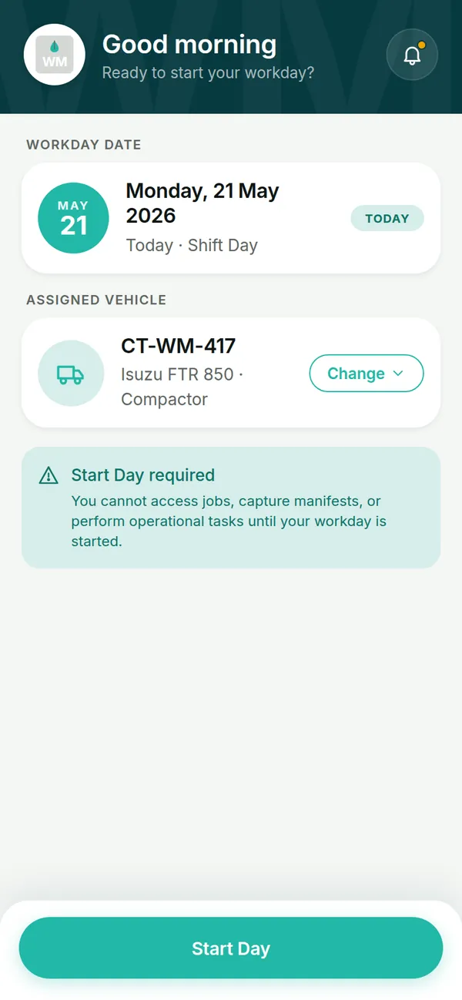
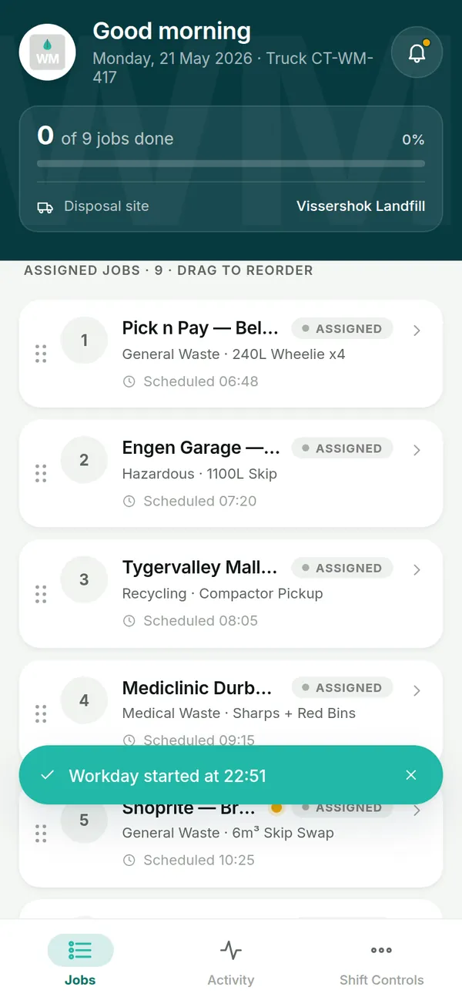
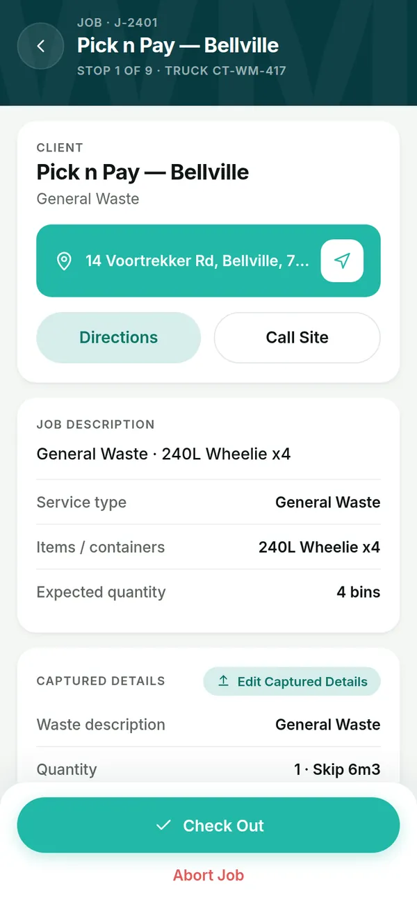
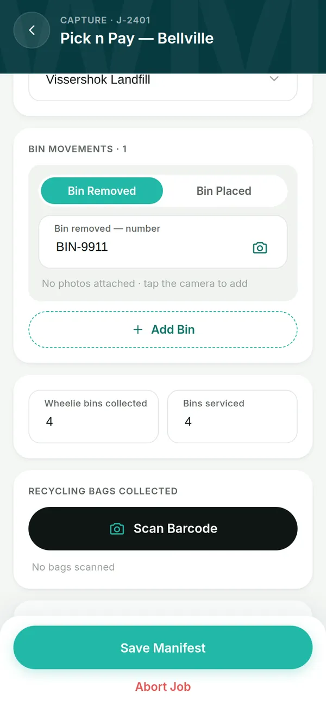
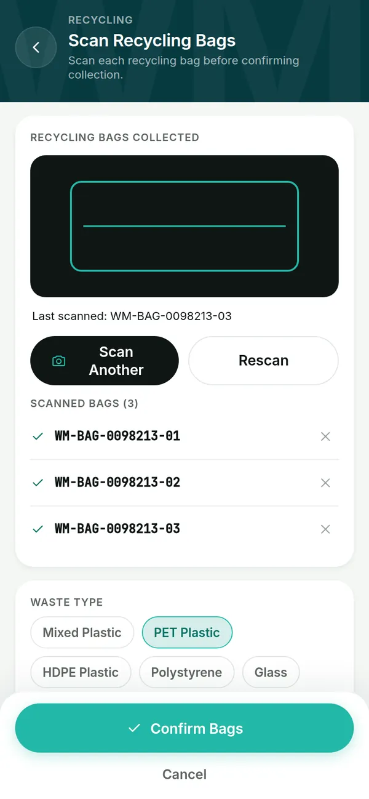
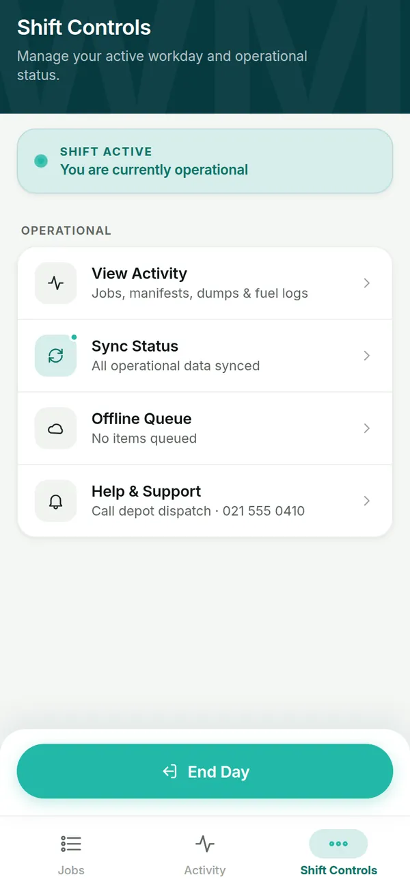

Selected work
Mobile app · UX/UI · Interaction design
A driver app where the next step is always obvious.
A waste-collection driver’s day is a chain of jobs done in the cab, on site and often offline. I designed the app so the driver always knows the next step.
- Role
- Product Designer
- Platform
- Mobile app
- Scope
- Jobs, evidence capture, sign-off, end of day
- Status
- Design complete · In development

- Problem
- Drivers must capture detailed records, such as manifests, bins, photos and signatures, while busy doing the work.
- My part
- The full driver workflow: start of day, jobs, evidence capture, customer sign-off and end-of-day review.
- Outcome
- Design complete, with a working prototype. Development is underway; not yet tested with drivers.
Challenge
Detailed records, captured by people who are busy.
The app is used between stops, often with no signal. Three constraints shaped every screen.
- Right first timeManifests, bins, photos and signatures cannot be fixed back at the office.
- No time for menusBetween stops, a driver should not have to search for the next step.
- Work must never feel lostWhen signal drops, the driver needs to know the record is safe.
Journey
One day, seven steps, always in the same order.
The app follows the driver’s day. Each screen answers one question: what do I do now?
- 01Start day
- 02Open job
- 03Check in
- 04Capture
- 05Sign-off
- 06Check out
- 07End day






Design prototype · demo data
Decisions
Three decisions that keep the driver moving.
Decision 01
One job, one next action
- Problem
- Drivers should not have to remember which step they are on.
- Decision
- One primary button whose label follows the job: Check in, Save manifest, Check out.
- Why
- The workflow drives the interface, not the driver’s memory.



Decision 02
Separate flows for each kind of evidence
- Problem
- Paperwork, bins, bags and signatures are different kinds of proof.
- Decision
- A dedicated flow for each. A manifest cannot be saved without a signature.
- Why
- Each record stays clear for whoever checks it later.




Decision 03
Ending the day is a review
- Problem
- Drivers rush the close-out, when the office needs the most information.
- Decision
- End Day shows what is done, left and unsynced, and asks for a reason if work is outstanding.
- Why
- The office sees what was missed, and why.



Status
Designed and prototyped. Next: testing with drivers.
The design is complete and development is underway. It has not launched or been tested with drivers, so no results are claimed.
- First shiftCan a driver finish a job unaided on their first shift?
- The changing buttonIs the primary button understood as its label changes?
- Offline trustIs the sync status noticed, and trusted, when signal drops?